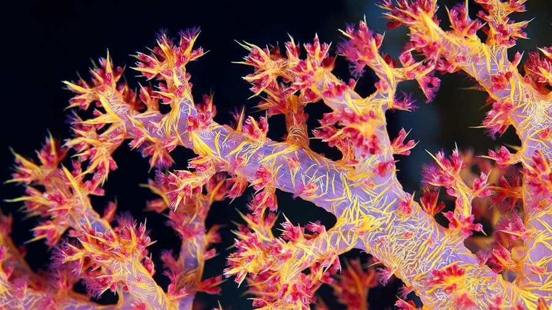

Carnation coral, also known as soft coral from the genus *Dendronephthya*, is a brightly colored coral species found in tropical and subtropical oceans, typically in deep or shaded reef environments. These corals exhibit vibrant hues of red, pink, orange, or yellow and have a tree-like structure with feathery polyps. Unlike hard corals, they lack a rigid calcium carbonate skeleton, making them soft and flexible. Carnation corals rely on plankton for nutrition and are filter feeders, often found in areas with strong currents. They are sensitive to changes in water quality and are challenging to maintain in artificial environments, highlighting their dependence on stable natural habitats.
CARNATION-CORAL
